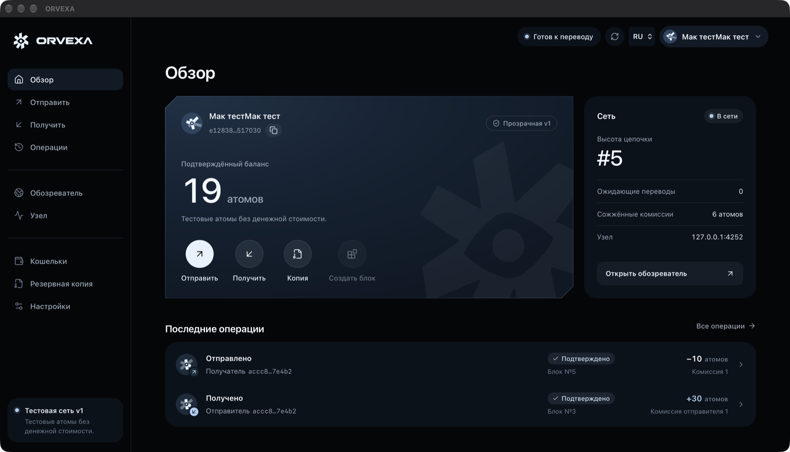
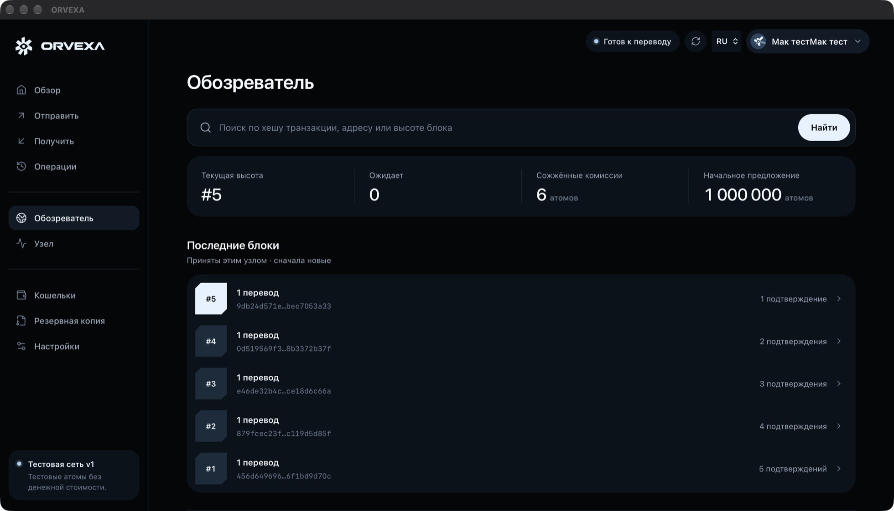

Ключи остаются у вас.
Создайте зашифрованный кошелёк, получите адрес и QR-код, подписывайте переводы локально и сохраняйте резервную копию. В v1 восстановление использует файл и пароль; seed-фразы появятся позже.
Кошелёк, обозреватель блоков и проверяющий узел в одном приложении ORVEXA. Ключи остаются у вас. Узел помогает хранить и проверять цепочку.
В v1 адреса и суммы публичны. Только тестовые атомы без денежной стоимости. Приватные переводы, консенсус валидаторов и награды ещё не включены.

Создайте зашифрованный кошелёк, получите адрес и QR-код, подписывайте переводы локально и сохраняйте резервную копию. В v1 восстановление использует файл и пароль; seed-фразы появятся позже.
Запустите настоящий полный узел Rust из приложения. Обменивайтесь подписанными транзакциями и блоками по TCP / Noise. Останавливайте и возобновляйте работу с той же цепочкой.
Просматривайте настоящие блоки, ищите транзакцию по хешу и проверяйте включение в цепочку. Обозреватель показывает публичную информацию текущего протокола.
Высота, ожидающие переводы, сожжённые комиссии и последние блоки берутся у локального узла, который сам проверил цепочку. Сторонний сервер для этого не нужен.
Вверху приложения всегда видно одно состояние: подключение, синхронизация, готовность к переводу или отсутствие связи. Пока узел догоняет сеть, отправка выключена.

Без облачного аккаунта, подписки и VPN. Участники предоставляют компьютеры и подключение к интернету.
Скачайте приложение для Mac или Windows. Узел и интерфейс уже внутри; Rust и Node.js для запуска не нужны. Создайте локальный кошелёк и сохраните зашифрованную копию.
Импортируйте публичные genesis.json и network.json от оператора. Независимо сверьте идентификатор цепочки. Присоединение не создаёт отдельную сеть незаметно.
Нажмите «Запустить узел». Он работает в фоне приложения, пока вы пользуетесь кошельком и обозревателем. Оставьте ORVEXA открытой: закрытие этой версии останавливает узел.
Основная сеть v1 прозрачна. В отдельной тестовой сети v2 внутри приложения суммы, адреса и связи платежей уже скрыты в цепочке, а раскрыть их можно только по решению владельца. Монеты обеих сетей тестовые.
Уже опубликованные данные нельзя сделать секретными задним числом. Переданные сведения просмотра нельзя удалить из чужой копии.
Поэтапный план разработкиНа Mac и Windows узел запускается из приложения. В Linux можно собрать консольный узел. Доступные извне участники помогают подключаться остальным; обычные узлы могут устанавливать исходящие соединения за NAT.
Инструкция для серверовgit clone https://github.com/waxiechc/orvexa.git
cd orvexa
cargo build --release --locked \
-p orvexa-node -p orvexa-cliИспользуйте общую genesis и настоящий адрес начального узла от оператора. Команда собирает программу, а не создаёт работающую публичную сеть.
Нативные приложения для macOS и Windows. Настоящий локальный узел. Открытый исходный код.
Универсальное приложение · ZIP
Портативный EXE · x64